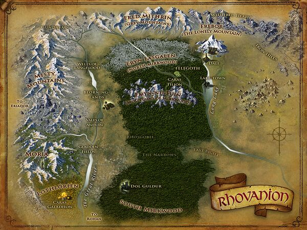

Le Rhovanion est une grande région de la Terre du Milieu, traversée par l'Anduin (le Long Fleuve), et couverte en grande partie par la Grande Forêt Verte. Elle est la région d'Occident la plus proche du Rhûn. Le nord de la Forêt Noire abrite le Royaume des Elfes sylvains (Nandor) et celui des Hommes des Bois. D'autres importants royaumes font également partie du Rhovanion, parmi lesquels la Lothlórien pour les Elfes Sindar, le Mont Solitaire (Erebor) et les Collines du Fer pour les Nains, enfin les villes de Dale et de Lacville ainsi que le Dorwinion pour les Hommes. La vallée de l'Anduin est occupée par les Beornides.
Le sud de la Forêt Noire vit à l'ombre de Dol Guldur, la forteresse de Sauron. Cette présence du Mordor a permis la prolifération de créatures de toutes sortes au coeur de la forêt, comme les araignées géantes.
